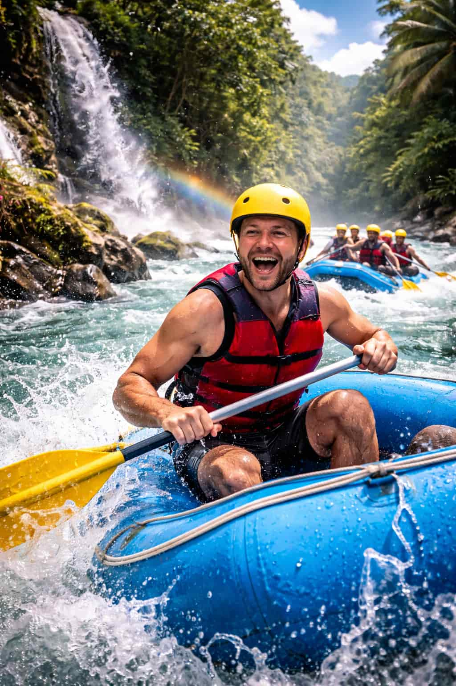

Welcome to the heart of adventure in the Caribbean. We specialize in delivering safe, high-energy white water rafting experiences through the stunning, untouched landscapes of the Dominican Republic. Beyond the adrenaline of the rapids, we pride ourselves on our roots; our team is comprised of experienced local guides who know every current and canyon of these rivers. We combine top-tier safety protocols with a genuine passion for the outdoors to transform a wild river ride into a seamless, unforgettable memory for you and your family.